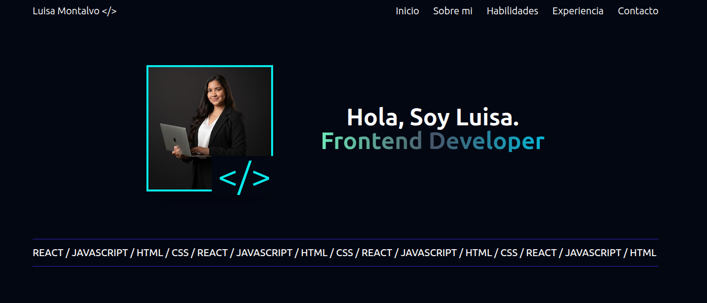

PORTFOLIO V1

Visión General
La primera versión de mi portafolio fue un ejercicio realizado, para practicar el diseño web y el desarrollo frontend haciendo uso del framework de Astro mezclandolo con las clases de diseño de tailwind y una atmosfera dark.
En este proyecto explore el uso de colores fluorecentes que resaltan en el fondo obscuro para crear un ambiente vibrante y moderno.
La estructura se trabajo en una landing page haciendo uso de una sola screen con scroling vertical para navegar entre las diferentes secciones de la pagina.
Rol
Desarrolladora Frontend
Fecha
2026
El Desafío
Hacer que el portafolio fuera visualmente simple pero atractivo y moderno, que se mostrara la informacion mas importante respecto al perfil profesional sin hacer la pagina tan larga o pesada.
La Solución
Haciendo uso de AI se crearon 2 imagenes con un aspecto profesional y de estudio, se utilizaron clases de tailwind para el diseño y la composicion de la pagina, el codigo se realizo con Astro haciendo una pagina liviana pero practica.